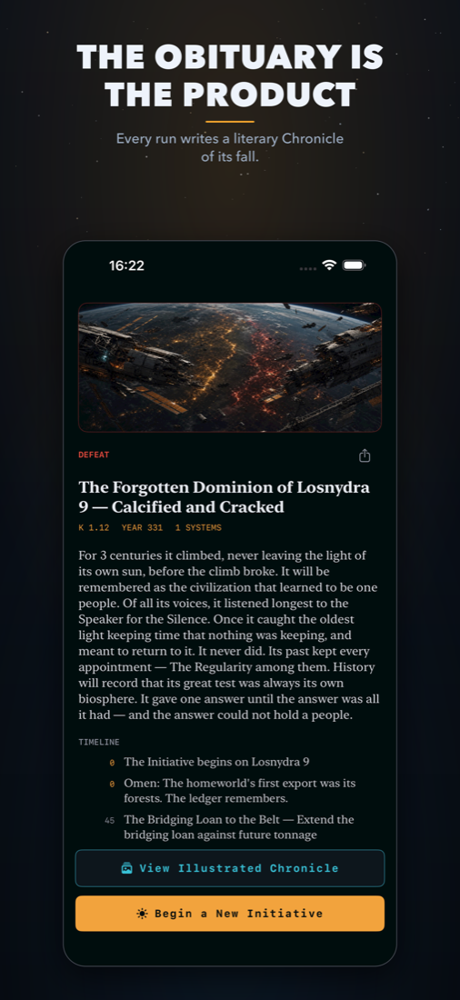

A literary hard–science-fiction roguelite. Guide a civilization toward the stars — and when it falls, the game writes down how.

You make the decisions that define a civilization — fund the Dyson swarm or seize its budget, free the machine mind or cage it — across a run of 10–25 minutes that always ends, in triumph or extinction.
When it ends, the game writes a Chronicle: a short, literary obituary of the people you led and lost. The simulation is just the ink.
Get it free on the App Store iPhone · iPad · Apple-silicon Mac · English & German · no ads, no accounts, no data collectionAuthored decisions with real tradeoffs whose consequences return generations later. No fake choices.
Every run is a different map, a different story, and a different hidden Great Filter tuned to your weakness.
Dyson swarms, wormhole gates, Matrioshka brains, von Neumann probes, the dark-forest answer to the Fermi paradox.
Fully offline. No ads, no accounts, no in-app purchases, no data collection. Every Chronicle stays on your device.
Questions, bugs, or feedback — email kern.konrad@gmail.com. Accessibility feedback is especially welcome.
One run is active at a time. Finishing a run retires its save and writes the Chronicle. Force-quitting mid-run is safe — the game saves after every beat and offers Continue on the home screen.
Each run secretly favors one threat — machines, biosphere, war, or cohesion. Watch which meters climb fastest and ease that pressure. Declaring victory at Kardashev Type II is legitimate; the climb to Type III is meant to be a gamble.
No. The game is fully offline and collects no data of any kind.
English and German — the entire interface and every event card. Choose in Settings (System / English / Deutsch).